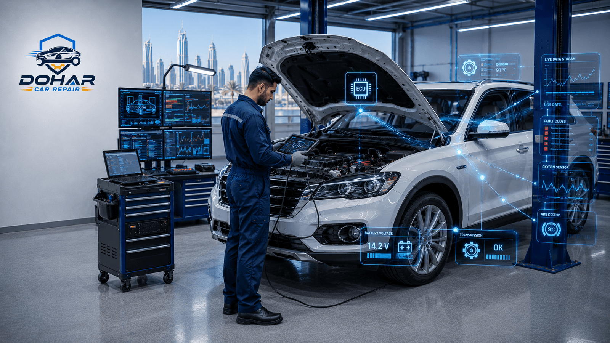
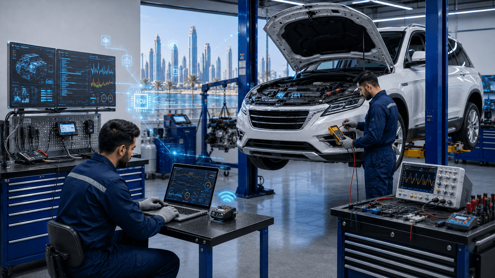

When the check engine light flashes on Al Rayyan Road or your dashboard lights up with ABS and airbag warnings after sitting in 45°C midday heat, guessing will not fix the problem. Professional Car Computer Diagnostics Doha service uses OBD-II scanners and manufacturer-level software to read fault codes, live sensor data, and ECU communication — so you know exactly what failed before you spend money on parts. This guide explains how computer diagnostics work in Qatar, what warning lights mean, typical costs in QAR, and why accurate diagnosis at Dohar Car Repair saves time, money, and engine damage.

Why Car Computer Diagnostics Doha Drivers Rely On Matter
Modern vehicles are computers on wheels. A typical car sold in Qatar has dozens of electronic control units managing fuel injection, ignition timing, transmission shift points, ABS braking, airbags, climate control, and emissions systems. When any sensor sends an abnormal reading — or when wiring corrodes under heat and humidity — the ECU stores a Diagnostic Trouble Code (DTC) and often illuminates a warning light.
Without Car Computer Diagnostics Doha workshops like Dohar Car Repair rely on handheld OBD readers and advanced brand-specific tools, technicians would be forced into expensive trial-and-error part swapping. That approach wastes money and often never finds intermittent faults common in Qatar's climate. Proper scanning answers three questions quickly: which system failed, how severe the fault is, and whether it is safe to drive.
Computer diagnostics also protect your warranty position and resale value. Clearing codes without documenting them hides history but leaves the underlying fault to return. A printed scan report gives you transparency and a clear repair path — whether the next step is a simple oxygen sensor replacement or deeper engine repair in Doha.
Flashing Check Engine Light
A steady check engine light usually means a non-urgent fault. A flashing light means misfire that can destroy the catalytic converter. Stop driving aggressively, reduce load, and arrange diagnostics the same day.
Common Causes of Warning Lights in Qatar
OBD-II stores standardized codes, but the real cause behind a code varies. In Doha, we see patterns tied to heat, dust, short trips, and stop-and-go traffic.
Check Engine Light (MIL)
The Malfunction Indicator Lamp often points to oxygen sensors, catalytic converter efficiency, misfires, EVAP leaks, mass airflow sensor contamination, throttle body carbon buildup, or fuel pressure problems. Cheap fuel quality variation and dusty air intake paths accelerate sensor faults. Codes such as P0171 (lean mixture), P0300 (random misfire), and P0420 (catalyst efficiency) are frequent in local workshops.
ABS and Traction Control Lights
Wheel speed sensors fail when road debris, bearing play, or wiring damage interrupt the signal. ABS module faults and low brake fluid can also trigger lights. Never assume an ABS light is "just a sensor" without confirming — your anti-lock protection may be offline. Related brake repair issues in Doha sometimes surface first as ABS warnings.
Airbag (SRS) Light
Clock spring faults in the steering wheel, seat belt pretensioner connectors after cabin work, moisture intrusion, and crash sensor issues keep SRS lights on. Airbag systems must be scanned with SRS-capable tools — a basic consumer OBD dongle often cannot read these modules.
Sensor Faults and Wiring
Heat hardens rubber boots, expands metal connectors, and oxidizes grounds. Vibration on Qatar highways loosens plugs. Sand enters harnesses around the engine bay. A code may say "sensor circuit" when the sensor itself is fine and the wire has a high-resistance break. That is why live data and circuit testing matter after the scan.
How Qatar Heat Affects Electronics
Cabin temperatures regularly exceed 60°C when parked. Battery electrolytes stress, electronic modules run hotter, and solder joints inside ECUs age faster. Thermal cycling — extreme heat by day and AC chill by night — cracks insulation and creates intermittent faults that only appear after highway driving or only when the engine is cold. Professional diagnostics include freeze-frame data (the exact conditions when the code set) so we can reproduce heat-related failures rather than guessing.

Warning Signs You Need an OBD Scan
Do not wait until the car limps home. Book diagnostics if you notice any of the following:
- Steady or flashing check engine light — even if the car "feels fine"
- ABS, ESP, or airbag lights staying on after startup
- Loss of power, hesitation, or rough idle on Al Waab or C-Ring traffic
- Poor fuel economy without a clear driving-style change
- Transmission shifting harshly or holding gears too long
- Fuel smell, failed emissions readiness, or failed inspection concerns
- AC blower or climate faults tied to body control modules — see also our car AC repair guide
- Intermittent stalling that disappears by the time you reach a garage
Professional Diagnostic Process at Dohar Car Repair
Serious diagnosis is more than plugging in a reader and reading one code. Our process is structured so you get a root cause, not a parts shopping list.
- Customer interview and symptom notes
We record when the light appeared, whether it is steady or flashing, recent services, fuel used, and driving conditions (highway, short trips, after rain wash, after parking in extreme heat).
- Visual inspection
We check battery voltage, ground straps, fluid levels, obvious vacuum leaks, damaged connectors, and rodent or heat-damaged wiring before trusting electronic data alone.
- Full-system OBD-II and OEM-level scan
We pull codes from the engine ECU, transmission, ABS, SRS, body modules, and other controllers — not only the powertrain. Pending and historic codes are noted, not just current ones.
- Freeze-frame and live data analysis
We review RPM, load, fuel trims, coolant temperature, oxygen sensor voltages, and misfire counters at the moment the fault set. Live graphing reveals intermittent signal dropouts.
- Targeted testing
Depending on the code path, we may smoke-test for vacuum/EVAP leaks, load-test the battery and alternator, check compression, test injectors, or verify sensor supply voltage and ground resistance.
- Clear explanation and quote
You receive the findings in plain language, priority ranking (safe to drive vs urgent), and a transparent repair quote before any parts are ordered.
- Repair verification scan
After fixing the root cause, we clear codes, run monitors where appropriate, and confirm the light stays off under real driving conditions.
"A fault code is a clue, not a parts invoice. At Dohar Car Repair we verify the failed component before we recommend replacement — especially important in Qatar where heat creates wiring faults that mimic bad sensors."
What Systems We Scan
Comprehensive Car Computer Diagnostics Doha service should cover more than the check engine light. Our workshop scans:
- Engine control module (ECM/ECU) — fuel, ignition, emissions, throttle, turbo where fitted
- Transmission control module — shift solenoids, clutch adaption, fluid temperature strategies
- ABS / ESP — wheel speed sensors, pump, yaw sensors, brake pressure
- SRS / airbag — impact sensors, pretensioners, occupancy systems
- Body control and comfort modules — lighting, central locking, sometimes climate interfaces
- TPMS and hybrid/electric systems where equipped (tooling dependent on model)
If your issue relates to broader mechanical symptoms after diagnosis, our team also handles full car repair service in Doha so you are not sent elsewhere for the fix.

Maintenance Tips to Prevent Electronic Faults
You cannot prevent every ECU code, but you can reduce false lights and sensor failures in Qatar's environment:
- Replace air filters on schedule — dust rapidly contaminates MAF sensors
- Use quality fuel from reputable stations; contaminated fuel fouls injectors and O2 sensors
- Keep the battery healthy — low voltage creates phantom codes and module communication errors
- Avoid water blasting electronics during aggressive engine bay washes
- Fix oil and coolant leaks early — fluids destroy sensor connectors
- Address small misfires immediately — protect the catalytic converter
- Park in shade when possible — lower cabin and battery heat stress
- Do not ignore soft warning lights — early scans are cheaper than cascade failures
Free Tip Before You Book
Write down exactly when the light came on (after fill-up, after highway, after short trip). That detail often cuts diagnostic time in half when our technicians correlate freeze-frame data.
Common Mistakes Drivers Make With Fault Codes
Ignoring the Light Because the Car Still Runs
Many emissions and sensor faults do not kill drivability on day one. Left alone, lean mixtures overheat catalytic converters (repairs often run into thousands of QAR), and misfires wash fuel into the oil. An ignored ABS light means you may not have anti-lock braking in a panic stop on the Expressway.
Clearing Codes Only Without Repair
A cheap Bluetooth OBD app can erase codes in seconds. The light may stay off briefly, then return — or readiness monitors drop and your car fails inspection readiness checks. Clearing codes also erases freeze-frame evidence technicians need to find intermittent heat-related faults. Diagnosis first, then clear after verified repair.
Replacing Parts Blindly From Internet Code Lists
Forums often say "P0420 means replace the catalytic converter." In Qatar that code frequently traces to exhaust leaks, aging upstream O2 sensors, or soft ECU strategies after incomplete repairs. Blind part replacement is the most expensive mistake we undo for customers.
Using Only a Basic Code Reader
Consumer tools often show one powertrain code and miss ABS, SRS, and manufacturer-specific codes. Professional equipment reads bidirectional tests, module coding status, and live data with proper sampling rates.
Car Computer Diagnostics Cost in Qatar (QAR)
Prices vary by vehicle brand complexity and whether deep electrical testing is required. Typical ranges at independent workshops in Doha:
- Basic OBD-II check engine scan: 50–150 QAR
- Full multi-system diagnostic scan (report included): 150–350 QAR
- Advanced OEM-level diagnosis with live data / guided tests: 250–500 QAR
- ABS / SRS dedicated diagnosis: 200–450 QAR
- Sensor replacement (common O2 / MAF / wheel speed) after diagnosis: 250–900 QAR each (parts dependent)
- ECU repair or replacement / programming: 800–4,000+ QAR depending on model
- Wiring harness repair (heat-damaged circuits): 300–1,500 QAR
At Dohar Car Repair we explain findings before authorizing repairs. Diagnostic fees are often credited toward approved repair work — ask when you book. Honest quotes beat low "scan fees" that push unnecessary parts.
Benefits of Professional Computer Diagnostics
- Faster root-cause identification — less downtime for work and family schedules in Doha
- Lower total repair cost — pay for the failed part, not three wrong guesses
- Safety assurance — confirm ABS and airbag systems actually function
- Proof for warranties and insurance — documented scan reports
- Protection of expensive components — converters, turbos, transmissions
- Peace of mind in extreme climate — verify heat-related intermittent faults
Why Choose Dohar Car Repair for Diagnostics
Dohar Car Repair combines professional-grade scan tools with real road experience across Doha, Al Wakrah, Al Khor, and surrounding areas. We do not clear lights and send you away. We explain codes in plain English or Arabic-friendly workshop communication, show live data when helpful, and quote repairs transparently.
Our team handles European, Japanese, Korean, and American vehicles common in Qatar. Whether you need a quick check engine light diagnosis before a long trip to Al Zubarah or full ECU diagnosis after an overheating event, we prioritize accurate findings over parts sales. Same-day diagnostic appointments are often available — call 0097472223959 or message us on WhatsApp.
Check Engine Light On?
Book car computer diagnostics in Doha today. Contact Dohar Car Repair at 0097472223959 or WhatsApp us for accurate OBD scanning, ECU fault diagnosis, and transparent repair quotes.
Frequently Asked Questions
What is OBD-II and do all cars in Qatar have it?
OBD-II is the standardized onboard diagnostics port and protocol used on most gasoline vehicles from the mid-1990s onward and widely required for modern imports. Nearly all cars on Doha roads have an OBD-II port under the dash. Manufacturer-specific systems sit on top of that standard — which is why dealer-level software still matters for complex jobs.
Can I drive with the check engine light on?
If the light is steady and the car runs normally, short trips to a workshop are usually acceptable. If the light flashes, or you notice severe misfire, overheating, or loss of power, reduce load and arrange immediate diagnosis. When in doubt, call us before a long highway drive.
Will diagnostics fix my car automatically?
No. Diagnostics identify the fault path. Repair may involve a sensor, wire, software update, mechanical fix, or module replacement. Good diagnostics prevent wrong repairs — they are the map, not the destination.
How long does a diagnostic appointment take?
A straightforward check engine scan with clear codes may take 30–60 minutes. Intermittent heat-related faults or multi-module communication errors can take longer because we must reproduce conditions and test circuits carefully.
Do you diagnose ABS and airbag lights too?
Yes. We use tools capable of reading ABS and SRS modules, not only the engine ECU. Safety systems deserve the same precision as emissions faults.
Can extreme Qatar heat cause false codes?
Heat can cause real faults (sensor failure, expanded connectors, battery voltage drop) that set genuine codes. It can also create intermittent signals that confuse basic readers. Freeze-frame review separates climate-triggered issues from random noise.
Conclusion
A dashboard warning is your car asking for measurement, not luck. Professional Car Computer Diagnostics Doha service reads OBD-II and ECU data, accounts for Qatar's heat effects on electronics, and replaces guesswork with verified findings — protecting your engine, catalytic converter, ABS safety systems, and wallet. Whether your check engine light just appeared or ABS and airbag lamps have been on for weeks, Dohar Car Repair is ready to scan accurately, explain clearly, and repair only what failed. Call 0097472223959 or WhatsApp us today to schedule diagnostics before a small code becomes a costly breakdown.